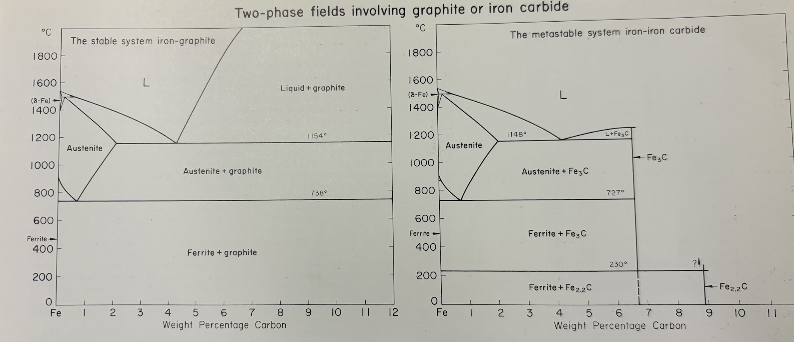

01 · Theory & expectations
Material Analysis: Expectations
The iron-carbon phase diagram is shown in Figure 1.

The solubility limit of the α-ferrite is not noted on the phase diagram, but it appears to be very low, to the degree of 10−2 wt%. This solubility limit occurs at 727 °C. The solubility limit of the γ-austenite occurs at 2.11% carbon at 1148 °C. Finally, the solubility limit of the δ-ferrite is also not noted on the phase diagram. It occurs at 1495 °C and appears to be close to 0.1% carbon.

For cast iron, we will be looking at between 2–4% carbon [2]. There is the potential for two different outcomes in the phase changes of iron-carbon. In one case, the carbon separates from the iron due to the solubility limit and forms graphite. In the other case, the carbon stays bonded with iron and forms cementite. Our starting temperature where the alloy is entirely liquid is about 1600 °C. At 1200 °C, we are in a mixed phase of austenite and liquid. At 1100 °C, we can expect to see austenite + cementite or austenite + graphite. At 600 °C and below, we expect to see ferrite + cementite or ferrite + graphite.
Phase compositions
Assuming we have 3 wt% carbon cast iron we can expect to see the following chemical compositions:
- 1600 °CLiquid that is 3 wt% Carbon and 97 wt% Iron.
- 1200 °CThe Austenite has 2 wt% Carbon and the liquid has 3.9 wt% in this phase.
- 1100 °CThe Austenite has 2.1 wt% Carbon and the Cementite has 6.7 wt% Carbon at all times.
- 600 °CThe Ferrite has .1 wt% Carbon and the Cementite has 6.7 wt% Carbon at all times.
Relative amounts of each phase
Assuming we have 3 wt% carbon cast iron we can expect to see the following relative amounts of each phase:
- 1600 °C100% liquid.
- 1200 °C47.3% Austenite and 52.6% Liquid.
- 1100 °C80.4% Austenite and 19.6% Cementite.
- 600 °C56.1% Ferrite and 43.9% Cementite.
- 400 °C55.6% Ferrite and 44.4% Cementite.
Liquid (L)Austenite (γ)Ferrite (α)Cementite (Fe₃C)
Sources
- ASM International. ASM Handbook, Chapter 24: Cast Irons.